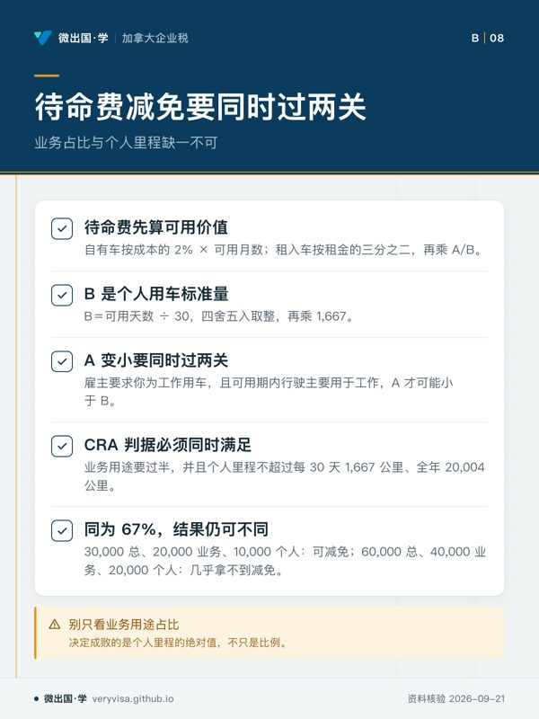
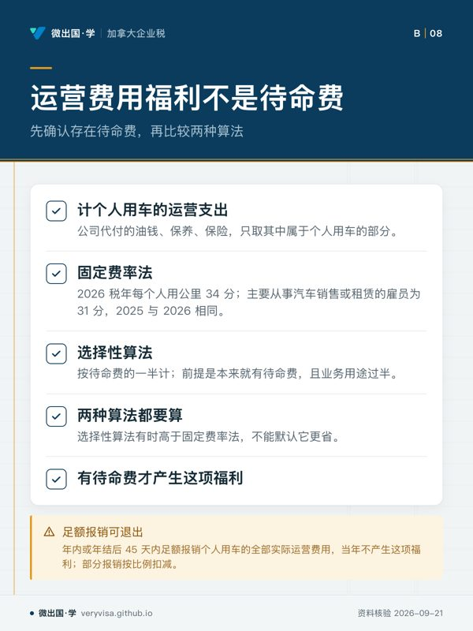
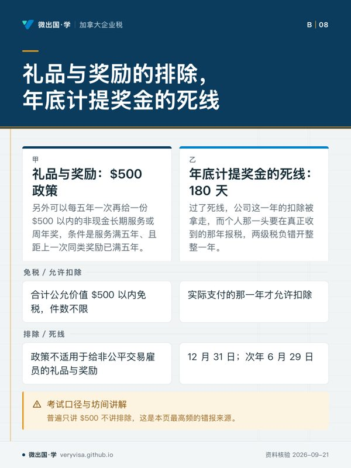

核实日期：2026-09-07｜现行口径：2026 税年（2026 日历年发的薪、年结落在 2026 年的公司）｜复核：2027-01-31（供款上限与车辆参数每年 1 月换一次，本页有五个数会动） 法条依据指向《所得税法》(Income Tax Act, ITA) 与《所得税条例》(Income Tax Regulations, ITR) 现行合订本（Act current to 2026-06-21）；数值指向加拿大税务局 (Canada Revenue Agency, CRA)、加拿大财政部 (Department of Finance Canada) 与卑诗省财政厅的现行页面。
公司账上有一笔钱，你想把它变成自己口袋里的钱。上一页处理的是「走工资还是走股息」这道选择题；这一页处理的是选完工资之后的全部后果——公司要不要替你扣钱、扣多少、什么时候交给政府、给你用的那辆车算不算收入、年底送的那份礼物要不要上 T4，以及一个只有小公司才有的陷阱：同一样东西给到你，可能因为你今天是以「雇员」还是以「股东」的身份拿的，走完全不同的两条税路，落在完全不同的两张表上。这一页帮你算清一位 2026 年拿 $95,000 工资的雇员在联邦这一侧的全部法定扣款，判断一辆公司车的待命费和运营费用福利怎么算、能不能减免，也看清一笔年底计提的奖金最晚哪天必须付掉，否则公司这一年白扣。
一、制度设计与底层逻辑：为什么「发钱」这件事被切成三层
本节回答This section answers 区分公司扣除合理性、雇员与股东福利分流及迟缴未扣罚则Distinguish corporate deduction reasonableness, the split between employee and shareholder benefits, and penalties for late or missed remittance 本章考题 1Question 1
1.1 一笔钱从公司到个人，要过三道各自独立的闸
第一道是公司能不能扣。ITA s.18(1)(a) 只有一句话：除非这笔开支是为了赚取经营或财产收入而发生，否则不许扣（加拿大联邦法规库（论坛解读））。s.67 再补一刀：即使目的对，也只能扣「在当时情形下合理」的那一部分（加拿大联邦法规库）。这两条合起来决定了给配偶或子女发工资的边界——不是「不能发」，而是发的数额要与他们实际做的事相称；给一位每周做两小时记账的家人开年薪 $80,000，超出合理范围的那一段会被 s.67 直接砍掉，而个人那一头的税照样已经交了。

第二道是个人要不要计入收入。雇员一侧的总闸是 s.6(1)(a)：因受雇而享有的任何种类的福利，其价值都要计入受雇收入。这句话的杀伤力在于「任何种类」——它不是一张清单，而是一条概括规则，清单只是 CRA 对常见情形的解释。
第三道是公司要不要替政府先收一道。这就是源头扣缴：加拿大退休金计划 (Canada Pension Plan, CPP) 供款、就业保险 (Employment Insurance, EI) 保费、所得税预扣，三样在发薪当天就要从毛额里扣下来，加上雇主自己那一份，按公司的汇款人档次上缴（CRA）。这三道闸互相独立：公司扣得了不代表个人免税，个人计入了不代表公司就能扣，而扣缴义务无论前两道结论如何都存在。
1.2 雇员身份与股东身份是两条路，走错一条后果全变
小公司的老板通常同时是雇员和股东。税法却坚持把这两个身份分开看。
给到雇员身份上的好处走 s.6(1)(a)，计入受雇收入，公司通常可以按薪酬扣除，报在 T4 上，且要按薪酬扣缴 CPP／EI／所得税。
给到股东身份上的好处走 s.15(1)：公司向股东、股东所在合伙企业的成员或拟任股东授予的任何福利，其金额或价值都要计入该股东当年的收入，除非落在几类明列的例外里（减资、赎回股份、清盘、派发股息等，加拿大联邦法规库（论坛解读））。这条路的后果要重得多——公司那一头通常拿不到任何扣除（因为它不是为赚取收入而发生的开支，过不了 s.18(1)(a) 那道闸），个人那一头照样全额计税，两级税负叠加，没有整合可言。报表也不同：股东福利报在 T4A「其他信息」栏的 code 028（其他收入）；股东贷款产生的利息福利才报 code 117（贷款福利）（CRA）。
同一辆车，给到「你作为雇员，因为工作需要用车」上，走 s.6 并进 T4；给到「你作为股东，因为这是你的公司」上，走 s.15(1) 并进 T4A。CRA 在应税福利指南里把这条分岔写得很直白：既是雇员又是股东的人，若是以股东身份获得车辆，就按股东福利处理（CRA）。判据是事实，不是你在账上怎么记。
✕
「反正公司是我的」——这句话在税法上是一条自杀式论证
用公司的钱付了家里的装修、给女儿买了车、替父母付了机票，账上挂「股东往来」或干脆记成公司费用。这三种做法分别落到三条不同的重罚路径上：记成公司费用的，公司扣除被否（s.18(1)(a)），个人还要按 s.15(1) 计入全额；挂股东借款的，若不在期限内还清，本金整笔计入个人收入（s.15(2)，本课股东贷款一页专门处理）；而无论哪一种，中间那些年公司少交的税都要补，加上按规定利率逐日复利的利息（CRA）。公司不是你的第二个钱包，它是另一个纳税人。
1.3 谁与谁在博弈
雇主想把报酬做成不计入雇员收入、又能自己扣除的形态；雇员想拿到不上税的好处；CRA 的立场是凡是有价值的、因受雇或因持股而给出的东西，默认都是收入，例外要么写在法条里，要么写在它自己公开的行政政策里。而行政政策不是法律——CRA 可以给，也可以收窄，而且几乎每条政策都带着一句排除条款。本页反复出现的一个规律是：政策的例外条款往往比政策本身更决定结论。
1.4 错报的三个法律后果
未扣缴：罚未扣金额的 10%，一个日历年内第二次且属明知或严重疏忽的按 20%（CRA）。注意罚的基数是应扣未扣的金额，不是税额差。
扣了不交或迟交：阶梯罚，1–3 天 3%、4–5 天 5%、6–7 天 7%、超过 7 天或根本没交 10%；一般只罚超过 $500 的那一部分，但若属明知或严重疏忽则全额罚。同一日历年内第二次且属明知或严重疏忽的，按 20%（CRA）。
不合规到构成犯罪：按简易程序定罪的，罚金 $1,000 至 $25,000，或并处最长 12 个月监禁（CRA）。扣下来的钱在法律上从不属于公司——它是替政府代收的，挪用它的性质与欠自己的税完全不同。
二、2026 税年现行规则与数字
本节回答This section answers 掌握扣缴参数、车辆上限、低息贷款与 180 天死线Master the withholding parameters, vehicle limits, low-interest loans and the 180-day deadline 本章考题 2Question 2 本章考题 3Question 3
2.1 三项法定扣款：两个在涨，一个费率在降
| 项目 | 2024 税年（考试口径） | 2025 税年 | 2026 税年现行 | 状态 |
|---|---|---|---|---|
| CPP 最高应计供款收入 (YMPE) | 68,500 元 | 71,300 元 | 74,600 元 | 已生效 |
| CPP 基本免税额 | 3,500 元 | 3,500 元 | 3,500 元 | 已生效（不指数化） |
| CPP 费率（雇员／雇主各） | 5.95% | 5.95% | 5.95% | 已生效 |
| CPP 雇员最高供款 | 3,867.50 元 | 4,034.10 元 | 4,230.45 元 | 已生效 |
| CPP2 第二层上限 (YAMPE) | 73,200 元 | 81,200 元 | 85,000 元 | 已生效 |
| CPP2 费率（雇员／雇主各） | 4% | 4% | 4% | 已生效 |
| CPP2 雇员最高供款 | 188 元 | 396 元 | 416 元 | 已生效 |
| EI 最高可保收入 (MIE) | 63,200 元 | 65,700 元 | 68,900 元 | 已生效 |
| EI 雇员费率（联邦，非魁省） | 1.66% | 1.64% | 1.63% | 已生效 |
| EI 雇员最高保费 | 1,049.12 元 | 1,077.48 元 | 1,123.07 元 | 已生效 |
| EI 雇主最高保费（1.4 倍） | 1,468.77 元 | 1,508.47 元 | 1,572.30 元 | 已生效 |
三年的数出自 CRA 的三张年度表（CRA（1、2、3））。三条读法值得记住。第一，基本免税额 $3,500 是这张表里唯一不指数化的数，它从 1997 年冻到现在，所以 CPP 的实际有效费率年年在悄悄上升。第二，CPP2于2024开始，2025已完成扩围：2024第二上限约为YMPE的107%，2025起约114%并按规定取整，考试口径里那个 $188 只是曲线的第一年，拿它当「最高供款」会低估一半以上。第三，EI 的费率在降而保费在涨——费率从 1.66% 一路降到 1.63%，但可保收入上限从 $63,200 升到 $68,900，两个数反向动，乘出来的最高保费仍然逐年上升。这是本页最好的一道判断题：只看费率会得出错误结论。
雇主一侧：CPP 与 CPP2 是一比一配比，雇员交多少雇主交多少；EI 是1.4 倍。所以一位 2026 年拿满上限工资的雇员，公司在毛薪之外还要额外承担约 $4,230.45 ＋ $416 ＋ $1,572.30 的法定成本。做薪酬预算时，把「工资」当成唯一成本会低估约 8%。
2.2 公司车：待命费与运营费用福利是两笔，不是一笔
公司提供的车产生两项独立的应税福利。
待命费 (standby charge) 计的是「车摆在那里随时可用」这件事本身的价值。ITA s.6(2) 给了完整公式（加拿大联邦法规库）：基本形态是自有车按成本的 2% × 可用月数，租入车按租金的三分之二，再乘以一个分数 A/B。分母 B 是「可用天数 ÷ 30，四舍五入取整，再乘 1,667」，也就是把 1,667 公里／30 天设成个人用车的标准量；分子 A 在满足条件时取「实际个人里程」与 B 的较小者，不满足时直接取 B。这就是所谓的减免待命费：只有当雇主要求你为工作用车、且该车在可用期内的行驶主要用于工作时，A 才可能小于 B，福利才按比例缩小。
CRA 把这两个条件翻成可操作的判据（CRA）：业务用途要过半，并且个人里程不超过每 30 天 1,667 公里、全年 20,004 公里。两个条件是「并且」，不是「或者」——年跑 30,000 公里、其中 20,000 公里是业务（业务占比 67%，过半了），个人 10,000 公里也在 20,004 以内，可以减免；但年跑 60,000 公里、业务 40,000（占比 67%）、个人 20,000 公里，同样过半却因为个人里程逼近上限而几乎拿不到减免。决定成败的是个人里程的绝对值，不只是比例。
运营费用福利 (operating expense benefit) 计的是公司替你付的油钱、保养、保险里属于个人用车的那一份。两种算法（CRA、加拿大财政部（论坛解读））：
一是固定费率法，2026 税年为每个人用公里 34 分（含商品及服务税／统一销售税与省销售税）；主要从事汽车销售或租赁的雇员为 31 分。这两个数 2025 与 2026 相同。
二是选择性算法，按待命费的一半计，条件是该雇员本来就有待命费，且业务用途过半。CRA 明确提醒：这种算法有时会算出比固定费率法更高的数，所以要两边都算再选。
运营费用福利只在存在待命费的前提下才产生（CRA）。还有一条常被忽略的出口：雇员在年内或年结后 45 天内，就个人用车部分的全部实际运营费用向公司足额报销的，该年不产生运营费用福利；部分报销的按比例扣减。
2.3 车辆的五个法定上限：一个已宣布未入条例，四个已生效
| 项目 | 2025 税年 | 2026 税年 | 状态 |
|---|---|---|---|
| Class 10.1 乘用车 CCA 上限（税前） | $38,000 | $39,000 | 已宣布（条例文本仍写 $38,000） |
| Class 54 零排放乘用车 CCA 上限 | $61,000 | $61,000 | 已生效 |
| 月租金扣除上限（税前） | $1,100 | $1,100 | 已生效 |
| 新车贷利息扣除上限 | $350／月 | $350／月 | 已生效 |
| 员工个人用车应税福利固定费率 | 34¢／公里 | 34¢／公里 | 已生效 |
| 免税里程津贴（前 5,000 公里／其后，各省） | 72¢／66¢ | 73¢／67¢ | 已生效 |
| 免税里程津贴（前 5,000 公里／其后，领地） | 76¢／70¢ | 77¢／71¢ | 已生效 |
数出自财政部 2026-01-14 的年度新闻稿（加拿大财政部（论坛解读））。这里有一处必须并列写、不能选边的口径冲突：新闻稿说 2026-01-01 起取得的乘用车 CCA 上限升到 $39,000，而《所得税条例》s.7307(1) 的现行合订本（截至 2026-06-21）末行仍写着「2024 年之后，$38,000」——$39,000 尚未落进条例文本（laws-lois.justice.gc.ca（论坛解读））。同一张新闻稿里的另外四个数（$1,100 月租金、$350 月利息、$61,000 零排放上限、34 分福利费率）与条例一致，可以直接当现行用。做 2026 年新购车的折旧基数时，要写「$39,000，已宣布，条例待更新」，不能写成已生效的法定值。
⚠️
里程津贴与运营费用福利是两个方向相反的制度，别混
里程津贴（73¢／67¢）说的是雇员开自己的车办公事、公司按公里付钱——在这个上限内的津贴对雇员免税、对公司可扣。运营费用福利（34¢）说的是雇员开公司的车办私事、公司替他付了油钱——按这个费率把好处折算成雇员的收入。一个是公司付给人，一个是人欠公司；金额、方向、报表位置全不一样。判断从来只有一句话：这辆车登记在谁名下、公司在替谁付账。
2.4 礼品与奖励：$500 政策，以及那条让小公司几乎用不上它的排除
CRA 的行政政策（CRA）允许：每年送给雇员的非现金礼品与奖励，合计公允价值 $500 以内免税，件数不限；超出部分计入收入。另外可以每五年一次再给一份 $500 以内的非现金长期服务或周年奖，条件是服务满五年、且距上一次同类奖励已满五年。这两个 $500 互不占用，同一年可以各用一次。现金与准现金（可轻易变现的东西，如金条、证券、股票）永远是应税福利，礼品卡只有满足政策条件时才算非现金。
然后是那句排除：该政策不适用于给非公平交易雇员的礼品与奖励——CRA 的原话点名了「你的亲属、股东以及与他们有关系的人」。 对一家唯一股东兼唯一雇员的公司来说，这条排除等于说政策不存在：老板给自己、给配偶、给成年子女的任何礼品，都是全额应税福利，一分钱免税额都没有。考试口径与坊间讲解普遍只讲 $500 不讲排除，这是本页最高频的错报来源。
2.5 低息与无息贷款：ITA s.80.4 的推定利息
公司借钱给雇员或股东，利息低于规定利率的，差额本身就是一项应税福利。ITA s.80.4(1) 的算法是：按规定利率算出的应付利息，减去实际在年内或年结后 30 天内支付的利息，差额视为该年收到的福利（加拿大联邦法规库）。规定利率每季度公布一次（CRA）。
一条容易被忽略的技术细节（CRA）：用于购买或偿还购房贷款的部分属于购房贷款 (home-purchase loan)，其规定利率以设立时的利率封顶五年——五年内按当期规定利率算，但算出的福利不超过按设立时规定利率计算的利息；当期利率比设立时低，就按更低的当期利率算（ITA s.80.4(4)）。超过五年期限的，第五年末的余额视为一笔新贷款，按当时的规定利率重新起算。在规定利率处于低位时设立购房贷款，等于给未来五年的利率加了一个低位天花板。
2.6 年底计提奖金的死线：180 天
ITA s.78(4) 规定：公司在某税年计提的薪金、工资或其他报酬，若在该税年结束后第 180 天仍未支付，就视同不在计提年度发生，改为在实际支付的那一年才允许扣除（加拿大联邦法规库（论坛解读））。合理的休假或假日工资、以及递延薪酬安排下的金额除外。
这条封死了「年底在账上挂一笔奖金压低应税收入、钱明年慢慢付」的做法。年结日 12 月 31 日的公司，死线是次年 6 月 29 日；年结日 6 月 30 日的公司，死线是次年 12 月 27 日。过了死线，公司这一年的扣除被拿走，而个人那一头要在真正收到的那年报税，两级税负错开整整一年。
三、实务流程：从开薪资账户到 2 月底交表
本节回答This section answers 判定汇款档次、2月底申报死线、福利销售税与T4新代码Decide the remitter tier, the end-of-February filing deadline, GST/HST on benefits and the new T4 code
3.1 先有账户，才能发第一笔工资
公司要在首次发薪之前开立薪资 (RP) 项目账户，挂在同一个企业号 (Business Number, BN) 下面。每个 RP 账户各自独立报一份 T4 信息申报表（CRA）。自 2025-11-03 起，新的企业号与 CRA 项目账户注册必须在线办理，CRA 已停止电话注册（CRA）。
3.2 汇款人四档：由「两年前」的月均预扣额决定
CRA 用两个日历年之前你为全部薪资项目账户实际预扣的 CPP、EI、所得税总额，除以那一年有付款义务的月数（最多 12），得到月均预扣额 (average monthly withholding amount, AMWA)，据此定档（CRA）。
| 档次 | 判据（两年前的 AMWA） | 到期日 |
|---|---|---|
| 季度汇款人 | 低于 $3,000（前一年或前两年任一年），且有完美合规记录 | 4 月 15、7 月 15、10 月 15、1 月 15 |
| 普通汇款人 | 低于 $25,000，或新雇主 | 扣款次月 15 日 |
| 加速门槛一 | $25,000 – $99,999.99 | 上半月的扣款当月 25 日；下半月的次月 10 日 |
| 加速门槛二 | $100,000 及以上 | 每月四段，各段结束后第三个工作日；且必须经金融机构缴 |
三条要点。第一，新雇主一律先按普通汇款人，不能自己挑档。第二，季度资格要的「完美合规记录」定义很宽：过去 12 个月内 CPP、EI、所得税的扣缴与上缴全部按时，商品及服务税／统一销售税按时缴，且 T4 类信息申报与销售税申报也全部按时（CRA）。销售税迟报一次，会让你在所得税这一侧丢掉按季汇款的资格——三套制度之间少见的硬联动。第三，联营公司的 AMWA 要合并计算：一个公司集团两年前的 AMWA 合计达到 $25,000，组内所有公司都被视为加速汇款人，哪怕其中某一家只有一名兼职雇员（CRA）。联营的判据与小企业扣除那一侧同源，所以「拆公司发薪」在这里同样不成立。
门槛二的雇主还有一条只在这一档存在的罚则：在到期日当天缴、但没有经金融机构缴的，可能被罚应缴金额的 3%（CRA）。
3.3 年度收尾：2 月最后一天
T4 或 T4A 信息申报表与给雇员的表联，都要在次年 2 月最后一天之前完成（遇周六周日顺延至下一工作日）（CRA）。两条实务提醒：一是没拿到雇员的社会保险号也照样要扣、要缴、要按时报，不能以此为由拖延；二是 1 月 15 日到期的那笔（12 月的扣款）如果拖到与 T4 一起在 2 月缴，且申报本身在 1 月 15 日之后，那笔汇款算迟缴，罚则照走（CRA）。
3.4 应税福利的销售税尾巴
多数应税福利在计入雇员收入的同时，还被视为公司在次年 2 月最后一天收取了一笔商品及服务税／统一销售税，要在包含该日的申报期内申报（CRA）。所以一份 12 月的应税福利，会在下一个年度的销售税申报里再出现一次。做年度封账时，福利清单要交给两个人看：做 T4 的和做销售税的。
3.5 工资数据决定、却不归雇主判的六项个人抵免与联邦福利
入职资料、福利说明书和年终 T4 里，常会碰到一批不是公司福利、却要用工资数据来决定的个人抵免与联邦福利。雇主在这里只做两件事：把 T4 上该填的格子填对；把付款期间、履职地点、工时、谁付的钱记清楚。资格与金额由员工本人的申报和福利机构决定。公司政策里写「员工一定能领到」，或者用工资系统替员工估算福利，都是越位。下面六项按「雇主手上有没有要做的动作」排序。
个人护理员抵免 (Personal Support Workers Tax Credit)。 随 C-15 立法（2026-03-26 御准）已生效，适用 2026 到 2030 税年，可退还，额度是 1,100 元与合格报酬 5% 中的较小者（Parliament of Canada、CRA）。两处直接落在雇主身上：合格报酬必须由雇主在 T4 上用新设的代码认证，雇主没填，员工就申报不了；在卑诗省、纽芬兰与拉布拉多、西北地区履职的报酬不合格，因为这三地已与联邦签了护理员加薪的双边协议（CRA）。所以在 BC 经营的居家护理机构，BC 境内工时对应的报酬不能认证；跨省派工的，要按履职地拆开记工时，不能按职位名称整体认证。
T4 第 45 格与牙科护理计划。 自 2023 日历年起，T4 第 45 格（Employer-offered dental benefits）必填：申报员工或其家属在当年 12 月 31 日是否有资格使用你提供的任何牙科保险或牙科服务保障（CRA）。加拿大牙科护理计划 (Canadian Dental Care Plan, CDCP) 核资格时要看申请人有没有可用的牙科保障，这一格就是雇主侧的那条信息（Health Canada / Service Canada）。CDCP 按福利期（7 月到次年 6 月）运行，每年 6 月 1 日前要续期，错过续期会有保障空档（Health Canada / Service Canada）。公司可以在 5 月提醒员工，但续期是员工自己的事；内部提醒日不要写成法定截止日。
加拿大残障福利 (Canada Disability Benefit, CDB)。 按福利期发放，2026-07 到 2027-06 这一期看的是 2025 年个人报税表上的调整后家庭净收入（ESDC），福利本身不计入收入（C-15，Parliament of Canada）。
| 项目 | 2024 税年（考试口径） | 2025-07 至 2026-06 | 2026-07 至 2027-06（现行） | 状态 |
|---|---|---|---|---|
| 每月上限 | 拟议法规，尚未开付 | 200 元 | 204.20 元 | 已生效（ESDC） |
| 工作收入豁免：单身 | 无 | 10,000 元 | 10,210 元 | 已生效（ESDC） |
| 工作收入豁免：有配偶，两人合计 | 无 | 14,000 元 | 14,294 元 | 已生效（ESDC） |
| 递减起点：单身 | 无 | 23,000 元 | 23,000 元 × 指数因子 1.021 ＝ 23,483 元 | 条例公式计算值（加拿大联邦法规库） |
| 递减起点：有配偶 | 无 | 32,500 元 | 32,500 元 × 1.021 ＝ 33,182.50 元 | 条例公式计算值（加拿大联邦法规库） |
| 递减率 | 无 | 20%；两人都是受益人时各 10% | 同 | 长青（ESDC） |
递减起点这一行要单独说一句。《加拿大残障福利条例》s.6 把单身与有配偶的起点写成「23,000 元或 32,500 元乘以指数因子」，而官网已公布的三组执行额（月上限与两项豁免）都对应同一个因子 1.021，所以本福利期的法定起点是 23,483 元与 33,182.50 元（加拿大联邦法规库）。官网的计算示例与估算器仍明写按上一期数据，照抄示例里的 23,000 元与 32,500 元，会把现行起点算低。雇主侧唯一相关的是「工作收入」：工资、自雇收入与应税奖学金合计后先扣豁免额；雇主把 T4 报对即可，不必也不应替员工算福利。
加拿大儿童福利 (Canada Child Benefit, CCB)。 按福利年（7 月起）调整，2026-07 到 2027-06 这一年看 2025 年的调整后家庭净收入（CRA）。
| 项目 | 2024-07 起（考试口径） | 2025-07 起 | 2026-07 起（现行） | 状态 |
|---|---|---|---|---|
| 每孩最高：6 岁以下 | 7,787 元 | 7,997 元 | 8,157 元 | 已生效（CRA（1、2）） |
| 每孩最高：6 至 17 岁 | 6,570 元 | 6,748 元 | 6,883 元 | 已生效（CRA（1、2）） |
| 第一递减门槛 | 36,502 元 | 37,487 元 | 38,237 元 | 已生效（CRA） |
| 第二递减门槛 | 79,087 元 | 81,222 元 | 82,847 元 | 已生效（CRA） |
这些是家庭福利的外部参数，不是工资单上的金额。招聘材料里写「每个孩子可领多少」，既不准（取决于家庭净收入与监护安排），也把福利年与公司财年搅在一起。
基本个人金额 (Basic Personal Amount, BPA) 与 Top-Up 抵免。 BPA 是个人的非退还抵免额，不是公司给的钱。它对高收入者递减：净收入不超过 29% 税阶起点时取上限，达到 33% 税阶起点时取下限，中间线性递减（CRA）。
| 项目 | 2024 税年（考试口径） | 2025 税年 | 2026 税年（现行） | 状态 |
|---|---|---|---|---|
| BPA 上限 | 15,705 元 | 16,129 元 | 16,452 元 | 已生效（CRA） |
| BPA 下限 | 14,156 元 | 14,538 元 | 14,829 元 | 已生效（CRA） |
| 递减区间（净收入） | 173,205 至 246,752 元 | 177,882 至 253,414 元 | 181,440 至 258,482 元 | 已生效（CRA） |
2026 税年联邦最低税率降到 14%（2025 税年全年混合为 14.5%），非退还抵免率随之降到 14%，但 Top-Up 抵免把超过第一税阶门槛那部分抵免额的抵免率保留在 15%，适用 2025 到 2030 税年，已随 C-15 御准生效（加拿大财政部、Parliament of Canada）。这条补丁针对的是一次性大额学费、医疗费或多年结转额度的人：没有它，降税反而可能让他们多交税。所以公司的福利说明不应承诺「降税了，员工到手一定变多」。
无障碍住宅改造抵免与医疗费抵免不能重复申报。 2025 税年及以前，同一笔改造支出同时符合两项条件的可以两边都报；自 2026 税年起，已按医疗费抵免 (Medical Expense Tax Credit, METC) 申报的支出，不再算无障碍住宅改造抵免 (Home Accessibility Tax Credit, HATC) 的合格支出（CRA）。公司若替员工报销或承担了这类开支，报销记录里要写清谁付的、付了多少、哪一年付的，交给员工自己决定报哪一项。
🔧
一张福利台账七个字段就够
员工编号、项目名称、适用税年或福利期、支付方、金额与付款日期、履职地点与工时（护理员抵免要用）、核实日期。公司证明「付了什么、给谁、何时、在哪里履职」，员工与报税人判断「符不符合、报哪一项」。两边的边界画清楚，年度参数变了只需复核变了的那几格。
四、联邦之外：卑诗省的第三笔税
本节回答This section answers 计算 BC 雇主健康税免税额、缺口费率与全额计税Compute the BC Employer Health Tax exemption, notch rate and full-amount tax 本章考题 5Question 5
联邦这一侧只有 CPP、EI 与所得税预扣。在卑诗省发薪的公司还有第三笔——雇主健康税 (Employer Health Tax)，按日历年的 BC 薪酬计征，与所得税、与源头扣缴都无关（BC 省政府（论坛解读））。
| BC 薪酬（日历年） | 一般雇主的税 |
|---|---|
| $1,000,000 及以下 | 免税 |
| $1,000,000.01 – $1,500,000 | 5.85% ×（BC 薪酬 − $1,000,000） |
| 超过 $1,500,000 | 1.95% × 全额 BC 薪酬 |
最后一行看着像断崖，其实是平滑衔接：一旦超过 $1,500,000，$1,000,000 的免税额整块消失，税基变成全额薪酬；但 5.85% 的缺口费率正是为此设计的——薪酬 $1,500,000 时按缺口费率算是 $29,250，按全额 1.95% 算也是 $29,250，两段在这里刚好接上，不会多跳一笔。缺口区间里每多发 $1 要交 5.85 分，超过 $1,500,000 之后边际成本回落到 1.95%。超过免税额的雇主必须注册（BC 省政府（论坛解读））。
联营雇主必须共享那一份 $1,000,000 免税额；联营组合计薪酬超过 $1,500,000 的，全组都没有免税额（BC 省政府（论坛解读））。这里的联营判据与所得税那一侧同源——所以「把薪酬拆到两家自己控股的公司」在 BC 这一格同样无效，与小企业扣除的分摊是同一个道理。
慈善与非营利雇主另有一套更宽的门槛（免税额 $1,500,000、缺口费率 2.925%、且按合格地点各享一份），本课的非营利组织一页专门处理。
五、历史变革：这套规则怎么长成现在这样
本节回答This section answers 辨析CPP2扩围稳态、在线注册要求与2026车辆参数变动Analyze the steady state of the CPP2 expansion, the online registration requirement and the 2026 vehicle parameter changes
2019 年：CPP 增强开始，费率从 4.95% 分五年爬到 5.95%，个人一侧的增强部分改走扣除而不是抵免——这是 CPP 六十年来第一次结构性改动。
2024 年：CPP2 上线，在 YMPE 之上再加一层 4% 的供款，上限 2024 年为 YMPE 的约 107%，2025 年起约 114%，2025 年已完成扩围进入稳态（CRA）。考试口径停在 2024 学年，因此它讲的 CPP2 参数只是这条曲线的起点。
2024-12-16 秋季经济声明：宣布恢复加速投资激励与即时费用化。CRA 在现行 T2 指南里给了它一个新名字与另一组日期参数（本课税会调整一页详述）。
2025-11-03 起：新企业号与 CRA 项目账户注册改为只能在线（CRA）。开公司之后第一件与薪资有关的事，从「打电话」变成了「登录」。
2026-01-14：财政部公布 2026 车辆参数，六个数里只有两个动（乘用车 CCA 上限与免税里程津贴各升），其余四个原地不动（加拿大财政部（论坛解读））。这是一个「年年要查、但多数年份不会变」的典型格子。
六、案例
本节回答This section answers 综合演练高薪总成本、公司车两种算法对比与年终奖金礼品Practice total cost of a high salary, comparing two calculations for a company car, and year-end bonuses and gifts 本章考题 4Question 4
案例一 · 温哥华的软件公司：一位年薪 $95,000 的雇员，公司实际付出多少（示例）
示例公司「北岸代码」2026 年给一位工程师发年薪 $95,000。
CPP：应计供款收入取 $95,000 与 $74,600 的较小者，减基本免税额 $3,500，得 $71,100；× 5.95% ＝ $4,230.45（触顶）。
CPP2：第二层区间是 $74,600 到 $85,000，共 $10,400；× 4% ＝ $416（触顶）。
EI：可保收入取 $95,000 与 $68,900 的较小者 ＝ $68,900；× 1.63% ＝ $1,123.07（触顶）。
雇员这一侧三项合计 $5,769.52，另加按累进税率预扣的所得税。雇主这一侧：CPP $4,230.45 ＋ CPP2 $416 ＋ EI $1,123.07 × 1.4 ＝ $1,572.30，合计 $6,218.75。也就是说，公司为这份 $95,000 的工作实际支出约 $101,219，还没算 BC 雇主健康税。
同一家公司若 2026 年 BC 薪酬合计 $1,300,000，另需缴雇主健康税 5.85% ×（$1,300,000 − $1,000,000）＝ $17,550（BC 省政府（论坛解读））。做用人成本预算时，工资只是账单的第一行。
案例二 · 素里的贸易公司：一辆车，两种算法差多少（示例）
示例公司「枫岭贸易」2026 年买了一辆成本 $45,000（税前）的车给销售经理全年使用，公司支付全部运营费用。全年行驶 40,000 公里，其中业务 28,000 公里、个人 12,000 公里。
先判减免资格：业务占比 70%，过半；个人里程 12,000 公里，低于 20,004 公里。两个条件都满足，可以减免。
待命费：基本额 ＝ 2% × $45,000 × 12 个月 ＝ $10,800。分母 B ＝ 1,667 × (365÷30 四舍五入 ＝ 12) ＝ $20,004 公里。分子 A 取个人里程 12,000 与 B 的较小者 ＝ 12,000。待命费 ＝ 12,000 ÷ 20,004 × $10,800 ＝ 约 $6,479。
运营费用福利，两种算法各算一遍：固定费率法 ＝ 12,000 公里 × 34¢ ＝ $4,080；选择性算法 ＝ 待命费的一半 ＝ 约 $3,240。这里选择性算法更低，但它有前提（要有待命费、业务用途过半），本例都满足，可以用。
两项合计约 $9,719 计入这位经理的 T4，公司同时要就这笔福利扣缴 CPP 与所得税（车辆福利不属于可保收入，不扣 EI）。
把个人里程压到 20,004 公里以内是本例价值最大的一步：如果个人里程变成 21,000 公里，减免资格消失，待命费直接跳到全额 $10,800，运营费用福利也随之升到 21,000 × 34¢ ＝ $7,140，两项合计约 $17,940——多跑 1,000 公里，应税福利多出八千多。这是一道台阶，不是一条斜线。
案例三 · 列治文的家族公司：年底那笔奖金与那份礼物（示例）
示例公司「江畔五金」年结日 12 月 31 日。2026 年 12 月，会计在账上计提了给老板的 $60,000 奖金以压低当年应税收入，并给老板夫妇各送了一份价值 $400 的非现金节日礼品。
奖金：s.78(4) 的死线是 2026 年 12 月 31 日之后第 180 天，即 2027 年 6 月 29 日（加拿大联邦法规库（论坛解读））。若在这一天之前付清，公司 2026 年可扣 $60,000，老板 2027 年报这笔收入。若拖到 2027 年 8 月才付，公司 2026 年的 $60,000 扣除被拿走、要在 Schedule 1 上加回，改到 2027 年才能扣——公司 2026 年的应税收入凭空多出 $60,000，很可能整段被推出小企业扣除的低税率区间。
礼品：两份各 $400，看起来都在 $500 以内。但老板是股东、配偶是股东的关系人，$500 政策对他们不适用。两份礼品各 $400 全额计入收入，且要判断是以雇员身份还是股东身份收到的——以雇员身份收到的进 T4 并扣缴，以股东身份收到的进 T4A code 028 且公司拿不到扣除（CRA）。同一份 $400 的礼物，最坏的走法比最好的走法贵出一整层公司税。
七、常见错报与自查清单
本节回答This section answers 排查季度汇款资格丢失、福利销售税漏报与双重抵免禁区Check for loss of quarterly remitter eligibility, missed GST/HST on benefits and the double-credit prohibition
只按费率判断保费涨没涨。 EI 费率 2026 年降到 1.63%，但最高保费仍在涨，因为可保收入上限升了。识别方法：凡是「费率 × 上限」的结构，两个数任一变化都要重算，不能只看一个。
把 CPP2 当成一笔小钱。 考试口径里的 $188 是 2024 年的数，2026 年是 $416，且雇主同额配比。识别方法：凡是「分阶段实施」的制度，考试口径那一年的数几乎一定不是终值。
给股东送礼按 $500 免税处理。 政策明文排除亲属与股东。识别方法：任何 CRA 的行政政策，先找它的排除条款再用。
同时是雇员和股东，却只按雇员报。 同一样好处的身份判定决定进 T4 还是 T4A、决定公司能不能扣。识别方法：问一句「如果这个人不是股东，公司还会给他这个吗」，答案是否，就往股东福利上判。
减免待命费只看业务占比。 业务过半只是两个条件之一，另一个是个人里程绝对值不超过 20,004 公里。识别方法：做车辆福利先拿里程本，不是先算比例。
运营费用福利只用固定费率法。 选择性算法在待命费低时可能更低，CRA 自己提醒要两边都算。识别方法：只要该雇员有待命费且业务用途过半，就两种都算一遍取低。
年底计提奖金不看 180 天。 过了死线扣除被推到支付年。识别方法：计提当天就在日历上标出「年结日 + 180 天」。
联营公司各报各的汇款档次。 AMWA 要按联营组合计，且 BC 雇主健康税的免税额也要共享。识别方法：只要老板名下不止一家公司，薪资合规先做联营图。
销售税迟报导致季度汇款资格丢失后仍按季缴。 完美合规记录覆盖三套制度。识别方法：季度汇款人每季自查一次三套制度的按时率。
忘了应税福利的销售税尾巴。 福利在次年 2 月最后一天被视为收取了销售税。识别方法：T4 福利清单与销售税申报表用同一份底稿。
护理员的报酬整体认证进 T4 新代码。 在卑诗省、纽芬兰与拉布拉多、西北地区履职的报酬不合格。识别方法：看认证金额对应的工时记录里有没有这三地的工作地点。
T4 第 45 格留空或一律填「无」。 这一格自 2023 年起必填，且是员工申请牙科护理计划时要核的信息。识别方法：拿福利供应商的参保名单对一遍 12 月 31 日那一天的资格。
用工资系统替员工估算儿童福利、残障福利或退税。 这些由家庭净收入、福利期与个人申报决定。识别方法：看福利说明书里有没有写死金额却不写福利期与核实日期。
术语双语对照
| English | 中文 | 一句话机制 |
|---|---|---|
| taxable benefit | 应税福利 | 因受雇而享有的任何种类的好处，其价值计入受雇收入（ITA s.6(1)(a)） |
| shareholder benefit | 股东福利 | 公司授予股东的好处计入股东收入，公司通常不得扣除（ITA s.15(1)），报 T4A code 028；贷款利息福利报 code 117 |
| non-arm's length | 非公平交易 | 关系人之间；CRA 多数行政优待明文排除这类对象 |
| standby charge | 待命费 | 公司车「随时可用」本身的价值；自有车成本的 2%×月数，租入车租金的三分之二（ITA s.6(2)） |
| reduced standby charge | 减免待命费 | 业务用途过半且个人里程不超 1,667 公里／30 天、20,004 公里／年，两条件并列 |
| operating expense benefit | 运营费用福利 | 公司替雇员付的个人用车运营开支；2026 税年固定费率 34¢／公里，或按待命费的一半 |
| optional calculation | 选择性算法 | 运营费用福利按待命费的一半计，需有待命费且业务用途过半 |
| reasonable per-kilometre allowance | 合理里程津贴 | 雇员开自己的车办公事、公司按公里付；2026 上限 73¢／前 5,000 公里、67¢／其后 |
| Class 10.1 | 10.1 类 | 超过法定上限的乘用车单独一类，不适用回收与终止损失规则 |
| prescribed interest rate | 规定利率 | CRA 每季公布；低息贷款福利与欠税利息都用它（ITA s.80.4） |
| home-purchase loan | 购房贷款 | 用于购房或偿还购房贷款的部分；五年内利率以设立时规定利率封顶 |
| CPP / YMPE | 加拿大退休金计划 / 最高应计供款收入 | 2026 税年 $74,600；基本免税额 $3,500 不指数化 |
| CPP2 / YAMPE | 第二层供款 / 第二层上限 | YMPE 之上再加一层 4%，2026 税年上限 $85,000、雇员最高 $416 |
| EI / MIE | 就业保险 / 最高可保收入 | 2026 税年 $68,900、雇员费率 1.63%、雇主 1.4 倍 |
| source deductions | 源头扣缴 | 发薪当天从毛额扣下的 CPP、EI、所得税，加雇主份额一并上缴 |
| AMWA | 月均预扣额 | 两个日历年之前的月均预扣总额；决定汇款人档次，联营公司要合并算 |
| regular / quarterly / accelerated remitter | 普通／季度／加速汇款人 | 四档到期日；新雇主一律先按普通 |
| perfect compliance history | 完美合规记录 | 12 个月内薪资、销售税、信息申报全部按时；季度汇款的前提 |
| failure to deduct penalty | 未扣缴罚 | 未扣金额的 10%，重犯且属明知或严重疏忽的 20% |
| late remittance penalty | 迟缴罚 | 3%／5%／7%／10% 四级阶梯，一般只罚超过 $500 的部分 |
| T4 / T4A slip | T4／T4A 表 | 雇员报酬走 T4，股东福利与贷款福利走 T4A；截止次年 2 月最后一天 |
| RP program account | 薪资项目账户 | 挂在企业号下的薪资账户；首次发薪前必须开立，现只能在线注册 |
| unpaid remuneration rule | 未付薪酬规则 | 计提的薪酬在税年结束后 180 天仍未付的，改到支付年才可扣（ITA s.78(4)） |
| Employer Health Tax (EHT) | 雇主健康税 | BC 按日历年薪酬征的省级税；免税额 $1,000,000，联营共享 |
| notch rate | 缺口费率 | 免税额与全额课税之间的过渡费率；BC 一般雇主 5.85% |
| Personal Support Workers Tax Credit | 个人护理员抵免 | 2026–2030 可退还抵免，合格报酬须雇主在 T4 上用新代码认证；BC、NL、NWT 履职的报酬不合格 |
| T4 box 45 (employer-offered dental benefits) | T4 第 45 格：雇主提供的牙科福利 | 申报 12 月 31 日员工或家属能否使用雇主提供的牙科保障；2023 年起必填 |
| Canadian Dental Care Plan (CDCP) | 加拿大牙科护理计划 | 按 7 月起的福利期运行，每年 6 月 1 日前续期 |
| Canada Disability Benefit (CDB) | 加拿大残障福利 | 按福利期发放、不计入收入；工作收入先扣豁免，再按条例公式递减 |
| Top-Up Tax Credit | Top-Up 抵免 | 2025–2030 年，超过第一税阶门槛那部分非退还抵免额仍按 15% 抵 |
来源
法条与条例（现行合订本，Act current to 2026-06-21）：s.6(1)(a) 受雇福利概括规则与 s.6(2) 待命费公式（加拿大联邦法规库）· s.15(1) 股东福利、s.15(2)/(2.6) 股东贷款（加拿大联邦法规库（论坛解读））· s.18(1)(a) 目的检验、s.18(1)(b) 资本性支出（加拿大联邦法规库（论坛解读））· s.67 合理性检验（加拿大联邦法规库）· s.78(4) 未付薪酬 180 天规则（加拿大联邦法规库（论坛解读））· s.80.4(1) 低息贷款推定利息（加拿大联邦法规库）· ITR s.7307 乘用车法定参数（laws-lois.justice.gc.ca（论坛解读））。
CRA 现行页面：应税福利与津贴雇主指南（CRA）· 源头扣缴与汇款雇主指南（CRA）· CPP 费率与上限（CRA）· CPP2 费率与上限（CRA）· EI 费率与上限（CRA）· 规定利率（CRA）· 公司税变化年表（用于在线注册与年度变化，CRA）。
财政部：2026 车辆扣除上限与费用福利费率新闻稿（加拿大财政部（论坛解读））。卑诗省：雇主健康税总览（BC 省政府（论坛解读））。
第 3.5 节（2026-09-13 回核官方原文）：T4 与 T4 Summary 雇主指南第 45 格（CRA）· 个人护理员抵免与 HATC/METC 的 CRA 口径（CRA）· C-15 御准版摘要（Parliament of Canada）· Budget 2025 税收措施补充说明（加拿大财政部）· 残障福利金额页（ESDC）与条例 s.6（加拿大联邦法规库）· 儿童福利计算页（CRA）· 指数化金额表（CRA）· 牙科护理计划（Health Canada / Service Canada）。
读完了：用考题把这一章过一遍
按这个顺序做，十五分钟：先看怎么考，再看陷阱，用思维导图默写一遍骨架，最后做 7 道带逐项解析的练习；错的题自动进间隔复习。
听、看、翻：老板也是雇主
AI 生成的中文讲解，经逐字稿核对；数字以本页正文与官方现行页面为准。
AI 生成的中文讲解，经逐字稿核对；数字以本页正文与官方现行页面为准。
听、看、翻：私人消费走公司账
AI 生成的中文讲解，经逐字稿核对；数字以本页正文与官方现行页面为准。
AI 生成的中文讲解，经逐字稿核对；数字以本页正文与官方现行页面为准。
听、看、翻：董事的扣缴责任
AI 生成的中文讲解，经逐字稿核对；数字以本页正文与官方现行页面为准。
AI 生成的中文讲解，经逐字稿核对；数字以本页正文与官方现行页面为准。
本页知识卡
不看正文也能拿到这一节的核心内容：先看导读，再看图。点图放大，左右翻页。
- 先看先比企业一侧能否扣，再看报表去向；这两处最能区分处理路径。
- 易漏同一人可兼具两种身份；获得好处时的实际事实才决定归类，账务写法不能改结果。
- 下一步去练习，用车辆情形检验自己能否分清两条路径。

- 先看先找公式中会缩小福利金额的那个分子。
- 易漏工作用途占多数仍不够，私人驾驶量过高也会卡住减免。
- 下一步去练习，把占比门槛和私人驾驶量分开检验。

- 先看先看哪些日常用车成本由公司代付，再比较计价方法。
- 易漏第二种算法不是优惠保证，结果可能反而更高。
- 下一步去练习，用同一组驾驶数据分别算出两个金额。

- 先看先看右栏的付款时点：它决定费用落在哪个年度。
- 易漏左边的友好待遇并非老板自用额度；右边也不能靠账面计提把扣除留在原年度。
- 下一步去练习，把身份关系和实际付款日分别标出来再判断。